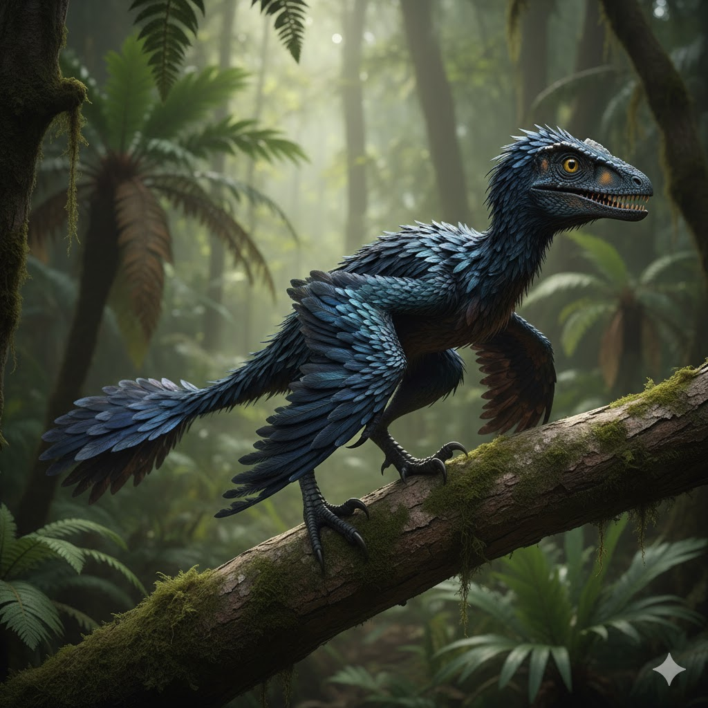
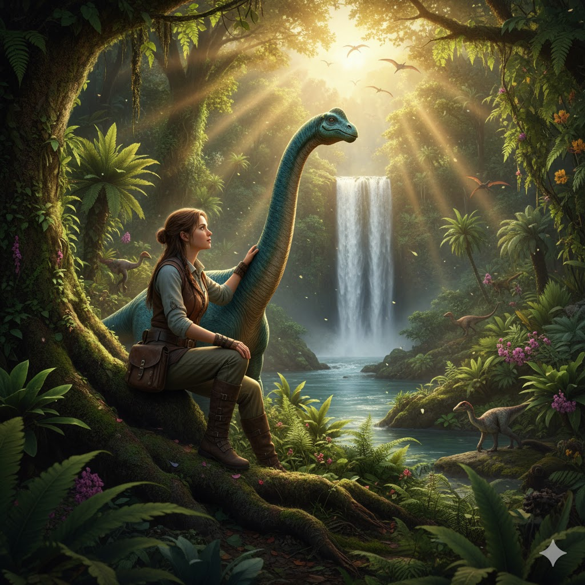
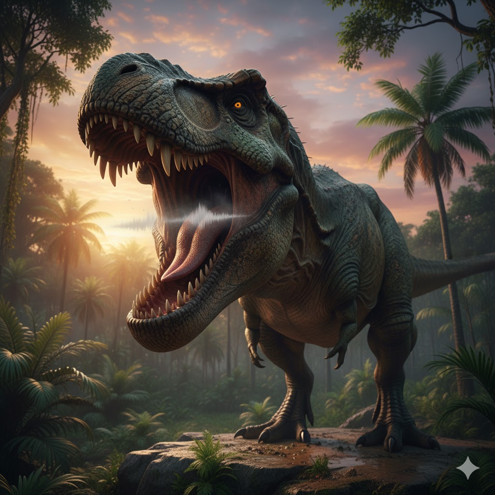
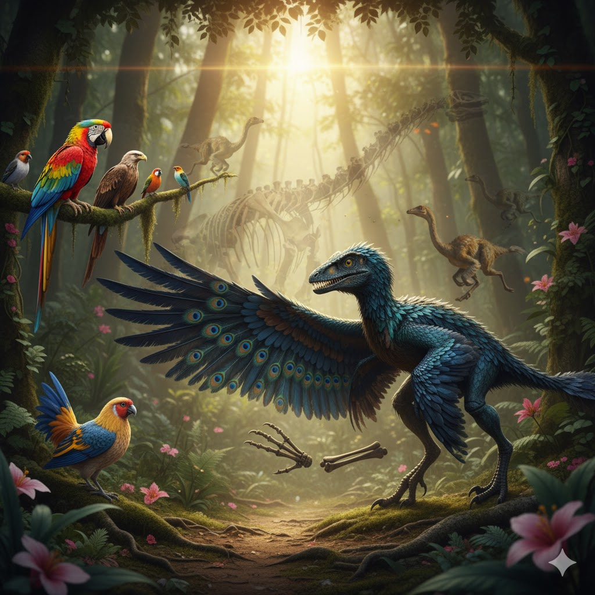
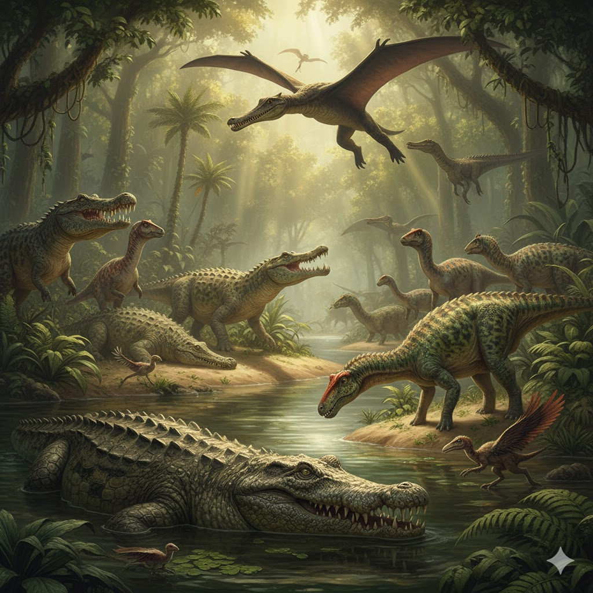
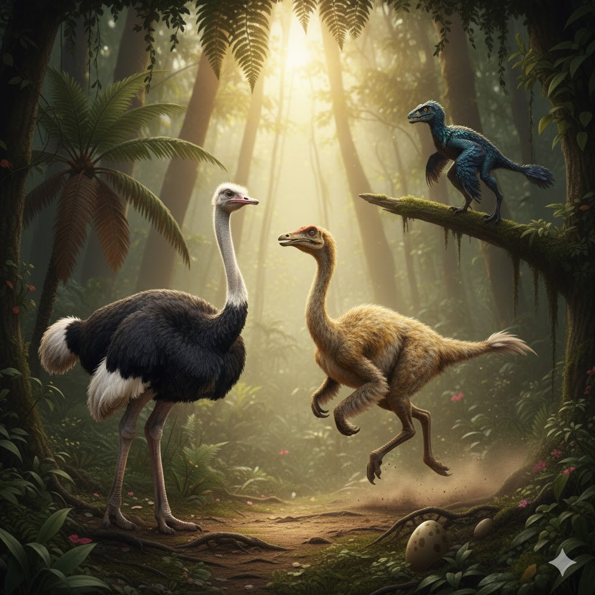

Maior Dinossauro
Maior Dinossauro
Patagotitan mayorum
38 metros de comprimento e 8 metros de altura.Estima-se que seu peso podia chegar a cerca de 77 toneladas.
- Época: Cretáceo
- Local: Argentina
- Tipo: Herbívoro

Menor Dinossauro
Microraptor
Tinha menos de 1 metro e podia planar entre árvores.
- Época: Cretáceo
- Local: China
- Tipo: Carnívoro
Mistério da Extinção
Impacto do Asteroide
Acredita-se que um asteroide gigante causou a extinção há 66 milhões de anos.
- Local: Yucatán, México
- Teoria: Impacto Global
- Consequência: Clima devastado

Mito Popular
Humanos e Dinossauros
Eles nunca coexistiram — os dinossauros sumiram milhões de anos antes dos humanos.
- Período: Fim do Cretáceo
- Diferença de tempo: +60 milhões de anos

Mito Popular
O Rugido do Tiranossauro
Ao contrário do que mostram os filmes, o T. Rex provavelmente não rugia como um leão — seu som era mais grave e parecido com um ronco profundo.
- Base científica: Estudos de paleontologia acústica
- Representação em filmes: Jurassic Park

Descendentes Modernos
Aves
As aves são os descendentes diretos dos dinossauros terópodes.
- Semelhança: Penas e ossos ocos
- Exemplo: Galinha = “Tiranossauro moderno”

Parentes Distantes
Crocodilos
Os crocodilos compartilham ancestrais com os dinossauros e sobreviveram à extinção.
- Tipo: Réptil
- Período: Triássico até hoje

Semelhança Moderna
Avestruz
Rápido e forte, o avestruz é um exemplo vivo de anatomia similar aos dinossauros.
- Velocidade: Até 70 km/h
- Origem: África